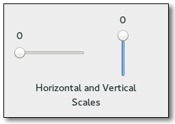

Gtk.Scale
Example
| Subclasses: | Gtk.HScale, Gtk.VScale |
|---|
Methods
| Inherited: | Gtk.Range (28), Gtk.Widget (256), GObject.Object (33), Gtk.Buildable (10), Gtk.Orientable (2) |
|---|
| static | new(orientation, adjustment) |
| static | new_with_range(orientation, min, max, step) |
| add_mark(value, position, markup) | |
| clear_marks() | |
| get_digits() | |
| get_draw_value() | |
| get_has_origin() | |
| get_layout() | |
| get_layout_offsets() | |
| get_value_pos() | |
| set_digits(digits) | |
| set_draw_value(draw_value) | |
| set_has_origin(has_origin) | |
| set_value_pos(pos) |
Virtual Methods
| Inherited: | Gtk.Range (5), Gtk.Widget (82), GObject.Object (7), Gtk.Buildable (10) |
|---|
| do_draw_value() | |
| do_format_value(value) | |
| do_get_layout_offsets() |
Properties
| Inherited: | Gtk.Range (8), Gtk.Widget (38), Gtk.Orientable (1) |
|---|
| Name | Type | Flags | Short Description |
|---|---|---|---|
| digits | int | r/w | The number of decimal places that are displayed in the value |
| draw-value | bool | r/w | Whether the current value is displayed as a string next to the slider |
| has-origin | bool | r/w | Whether the scale has an origin |
| value-pos | Gtk.PositionType | r/w | The position in which the current value is displayed |
Style Properties
| Inherited: | Gtk.Range (8), Gtk.Widget (17) |
|---|
| Name | Type | Default | Flags | Short Description |
|---|---|---|---|---|
| slider-length | int | 31 | r | Length of scale’s slider |
| value-spacing | int | 2 | r | Space between value text and the slider/trough area |
Signals
| Inherited: | Gtk.Range (4), Gtk.Widget (69), GObject.Object (1) |
|---|
| Name | Short Description |
|---|---|
| format-value | Signal which allows you to change how the scale value is displayed. |
Fields
| Inherited: | Gtk.Range (1), Gtk.Widget (1), GObject.InitiallyUnowned (3), GObject.Object (3) |
|---|
| Name | Type | Access | Description |
|---|---|---|---|
| range | Gtk.Range | r |
Class Details
- class Gtk.Scale(**kwargs)
Bases: Gtk.Range
A Gtk.Scale is a slider control used to select a numeric value. To use it, you’ll probably want to investigate the methods on its base class, Gtk.Range, in addition to the methods for Gtk.Scale itself. To set the value of a scale, you would normally use Gtk.Range.set_value (). To detect changes to the value, you would normally use the Gtk.Range ::value-changed signal.
Note that using the same upper and lower bounds for the Gtk.Scale (through the Gtk.Range methods) will hide the slider itself. This is useful for applications that want to show an undeterminate value on the scale, without changing the layout of the application (such as movie or music players).
# Gtk.Scale as Gtk.Buildable
Gtk.Scale supports a custom element, which can contain multiple elements. The “value” and “position” attributes have the same meaning as Gtk.Scale.add_mark () parameters of the same name. If the element is not empty, its content is taken as the markup to show at the mark. It can be translated with the usual ”translatable” and “context” attributes.
- static new(orientation, adjustment)
Parameters: - orientation (Gtk.Orientation) – the scale’s orientation.
- adjustment (Gtk.Adjustment or None) – the Gtk.Adjustment which sets the range of the scale, or None to create a new adjustment.
Returns: a new Gtk.Scale
Return type: Creates a new Gtk.Scale.
New in version 3.0.
- static new_with_range(orientation, min, max, step)
Parameters: - orientation (Gtk.Orientation) – the scale’s orientation.
- min (float) – minimum value
- max (float) – maximum value
- step (float) – step increment (tick size) used with keyboard shortcuts
Returns: a new Gtk.Scale
Return type: Creates a new scale widget with the given orientation that lets the user input a number between min and max (including min and max ) with the increment step. step must be nonzero; it’s the distance the slider moves when using the arrow keys to adjust the scale value.
Note that the way in which the precision is derived works best if step is a power of ten. If the resulting precision is not suitable for your needs, use Gtk.Scale.set_digits () to correct it.
New in version 3.0.
- add_mark(value, position, markup)
Parameters: - value (float) – the value at which the mark is placed, must be between the lower and upper limits of the scales’ adjustment
- position (Gtk.PositionType) – where to draw the mark. For a horizontal scale, Gtk.PositionType.TOP and Gtk.PositionType.LEFT are drawn above the scale, anything else below. For a vertical scale, Gtk.PositionType.LEFT and Gtk.PositionType.TOP are drawn to the left of the scale, anything else to the right.
- markup (str or None) – Text to be shown at the mark, using [Pango markup][PangoMarkupFormat], or None
Adds a mark at value.
A mark is indicated visually by drawing a tick mark next to the scale, and GTK+ makes it easy for the user to position the scale exactly at the marks value.
If markup is not None, text is shown next to the tick mark.
To remove marks from a scale, use Gtk.Scale.clear_marks ().
New in version 2.16.
- clear_marks()
Removes any marks that have been added with Gtk.Scale.add_mark ().
New in version 2.16.
- get_digits()
Returns: the number of decimal places that are displayed Return type: int Gets the number of decimal places that are displayed in the value.
- get_draw_value()
Returns: whether the current value is displayed as a string Return type: bool Returns whether the current value is displayed as a string next to the slider.
- get_has_origin()
Returns: True if the scale has an origin. Return type: bool Returns whether the scale has an origin.
New in version 3.4.
- get_layout()
Returns: the Pango.Layout for this scale, or None if the Gtk.Scale :draw-value property is False. Return type: Pango.Layout Gets the Pango.Layout used to display the scale. The returned object is owned by the scale so does not need to be freed by the caller.
New in version 2.4.
- get_layout_offsets()
Returns: x: location to store X offset of layout, or None y: location to store Y offset of layout, or None Return type: (x: int, y: int) Obtains the coordinates where the scale will draw the Pango.Layout representing the text in the scale. Remember when using the Pango.Layout function you need to convert to and from pixels using PANGO_PIXELS() or Pango.SCALE.
If the Gtk.Scale :draw-value property is False, the return values are undefined.
New in version 2.4.
- get_value_pos()
Returns: the position in which the current value is displayed Return type: Gtk.PositionType Gets the position in which the current value is displayed.
- set_digits(digits)
Parameters: digits (int) – the number of decimal places to display, e.g. use 1 to display 1.0, 2 to display 1.00, etc Sets the number of decimal places that are displayed in the value. Also causes the value of the adjustment to be rounded off to this number of digits, so the retrieved value matches the value the user saw.
- set_draw_value(draw_value)
Parameters: draw_value (bool) – True to draw the value Specifies whether the current value is displayed as a string next to the slider.
- set_has_origin(has_origin)
Parameters: has_origin (bool) – True if the scale has an origin If has_origin is set to True (the default), the scale will highlight the part of the scale between the origin (bottom or left side) of the scale and the current value.
New in version 3.4.
- set_value_pos(pos)
Parameters: pos (Gtk.PositionType) – the position in which the current value is displayed Sets the position in which the current value is displayed.
- do_draw_value()
Type: virtual
- do_get_layout_offsets()
Type: virtual Returns: x: location to store X offset of layout, or None y: location to store Y offset of layout, or None Return type: (x: int, y: int) Obtains the coordinates where the scale will draw the Pango.Layout representing the text in the scale. Remember when using the Pango.Layout function you need to convert to and from pixels using PANGO_PIXELS() or Pango.SCALE.
If the Gtk.Scale :draw-value property is False, the return values are undefined.
New in version 2.4.
Signal Details
- Gtk.Scale.signals.format_value(scale, value)
Signal Name: format-value
Flags: Parameters: Returns: allocated string representing value
Return type: Signal which allows you to change how the scale value is displayed. Connect a signal handler which returns an allocated string representing value. That string will then be used to display the scale’s value.
Here’s an example signal handler which displays a value 1.0 as with “–>1.0<–”.
<!-- language="C" --> static gchar* format_value_callback (GtkScale *scale, gdouble value) { return g_strdup_printf ("-->\%0.*g<--", gtk_scale_get_digits (scale), value); }
Property Details
- Gtk.Scale.props.digits
Name: digits Type: int Default Value: 1 Flags: r/w The number of decimal places that are displayed in the value
- Gtk.Scale.props.draw_value
Name: draw-value Type: bool Default Value: True Flags: r/w Whether the current value is displayed as a string next to the slider
- Gtk.Scale.props.has_origin
Name: has-origin Type: bool Default Value: True Flags: r/w Whether the scale has an origin
- Gtk.Scale.props.value_pos
Name: value-pos Type: Gtk.PositionType Default Value: Gtk.PositionType.TOP Flags: r/w The position in which the current value is displayed